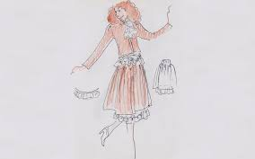

A start
Karl Lagerfield started his life in Germany. People have reported that he was born September 10th 1933, although Karl never confirmed or reported this himself. Karl grew up with is Mother, Father, older sister and half-sister. His father mad a fortune when in introduced condensed milk into Germany. In the 1930s the Lagerfelds moved to a rural countryside where when Karl was born, had no knowledge of the Nazis or the war.
Rise to Fashion
At only 14 year old Karl decided to move to paris to get inot fashion design. 
He was there for two years when he took first place at a design comptition for the coat category. This is where he met Yves Saint Laurent. They would become very good friends. Before this point Karls last name had a T at the end but he decided to remove it due to making his name more commercial. Soon after this a French designer named Pierre Balmain hired Karl.
Karl worked for this man for three years before he took a job at another fashion house. In 1961 Karl left and started his own collection.
Karl soon was deisinging for huge names such as Chloe and Fendi. Karl would often shop in flea markets to find old dresses to redesign or for insparation.
Rivalry

Unlike Karl who worked his way to the top, Saint Laurent was quickly hired by Chirstion Dior shortly after meeting Karl. When Dior passed away in 1957 Saint Laurent was chosen to take over. When the war broke out he served his time. When he got back in 1961 he discovered Dior had fired him. He won a lawsuite against them and founded his house and named it after himself.
Beginning in the late 70's Karl and Saint were competeing in the fashion world for the peoples love of designs. While Saint would take a riskier way and look to design for the future, Karl liked to take more of a dive into a classier older style. In the 80's Karl rose to a position that finaly rivaled Saint.
Respect
Karl died in 2019 goingdown in history as one of the best fashion designers. He changed the way of fashion introducting the fashion we have today. 
Karl did many things that few believed was possible such as reviving near dead lines, and jumping from line to line to work with them. Karl did many things throughout his life and will leave a mark on the fashion world.